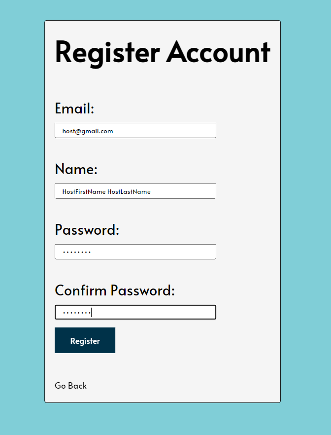
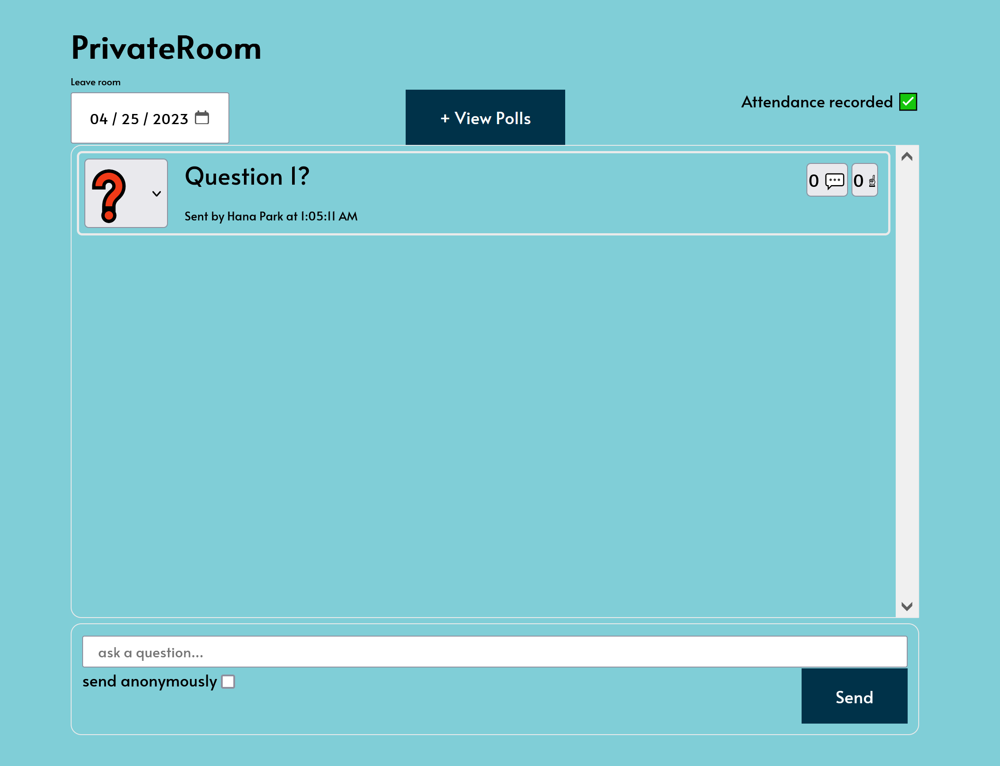
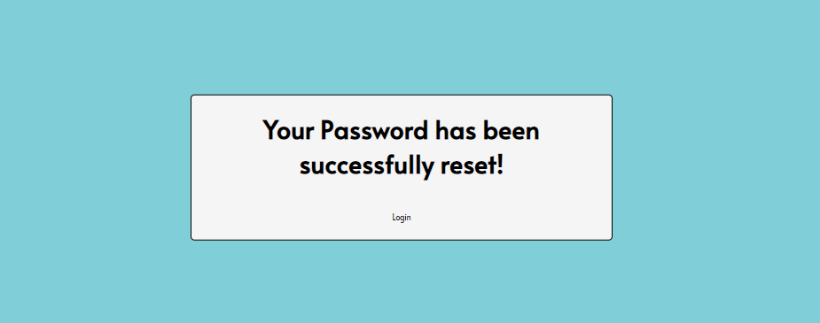

Project Goals
Our platform provides a safe and anonymous space for participants to ask questions and participate in discussions with a host or speaker. The main mission is helping participants to overcome the barriers that prevent active engagement and promoting a more inclusive learning environment. These environments include a student/host(s) relationships, presenter/audience relationships, and more.
Approach
By allowing participants to send questions to the host anonymously, the application will remove any risk of public embarrassment for the participants. This removes the cause of learned hopelessness and breaks the cycle that prevents many from participating in large-scale discussions. By breaking this cycle, participants will have their questions answered much more quickly and their learning processes encouraged. Additionally, the application has added features such as an upvote and resolved markings for the questions to clarify the question's status and importance.
Problems we are trying to solve
- Help users break out of a cycle of learned helplessness and build the confidence to take on new challenges.
- Reduce any miscommunication between host and participants.
- Tackle the lack of engagement problem faced in large scale discussions.
- Resolving complicated attendance tracking.
High level features
- Website Application:
- Sign-in/up: Users should be able to sign in with email/password. =
- Dashboard: Confirms successful log on. Name displayed at the top of the web page.
- Activity Feed: Users should be able to view other people's questions.
- Password Resetting: Users should be able to reset their password.
- Removing Rooms: Users should be able to remove rooms on their dashboard.
- Host Dashboard
- Room Creations: Hosts should be able to create public and private rooms that other users may join
- Question Indication: Host(s) and question senders should be able to indicate if a question is important or has been resolved.
- Poll Deployment: Non-host participants should be able to take polls and host(s) should be able to send polls.
- Attendance Tracking: host(s) should be able to see current non-host participants in class and view a report on attendance after the end of class.
- Participant Dashboard
- Conversation Threads on Questions: non-host participants should be able to respond to questions with threads.
- Question: non-host participants should be able to send questions to activity feeds anonymously or non-anonymously.
- Upvote: non-host participants should be able to upvote questions asked by other non-host participants.
- Attendance Marking: non-host participants should be able to mark their attendance with a daily code produced by a host.
Tools Used
- Next.js framework: An open-source web development framework providing React-based web applications
- CSS, HTML, Javascript: Languages used to develop the frontend for the web application.
- MongoDB: Database to store questions asked, user profiles, room information, etc.
- Vercel: Cloud platform used to deploy the website
- Pusher: Used to maintain real-time communication between the users.
- NodeMailer: Used to reset user passwords
Our web application
UnMute User Experience
Homepage
Welcome to the homepage of unMute - the ultimate platform for hosting town-hall type meetings or classes. As a user, you will be presented with various options upon landing on the homepage. You can either log in to your existing account, create a new account or use a guest login for a one-time access.
Registering An Account
If you decide to create a new account, you will be directed to a page where you can provide your name, email address, and password to register.
Logging In
Once you submit these details, you will be taken to the login page.
Logged in users will have the option to Logout, Join a Public Room, or View Dashboard of Rooms.
Dashboard
After clicking "Dashboard", host(s) will have the option to create public or private rooms by clicking the "create room" button.
Creating Rooms
Private Room Creation
To create a private room, e-mails of users need to be added to the "Participants" box. The e-mails entered are used to automatically add the room to the added user's dashboard.
Images with blue borders below show the participant's point of view of accessing the room created by the host. The partipant will log in and navigate to the dashboard to
Public Room Creation
To create a public room, the "Participants" box will be empty. This room will be appropriate for town halls and contain the same functionalities as a private room.

Attendance Tracking
After both the host and the participant have entered the room, the host can track the attendance of the partipant invited by having the partipant enter the daily attendance code displayed at the top of the host's dashboard. Host view is in left alignment with black boarders. Partipant View is in right alignment with blue borders.
Host View
Participant View

Messaging Features
Anonymously Sending Questions
Within the rooms, messages can be sent to the room to ask questions. Messages can be sent anonymously by clicking the "anonymous" check mark before sending a question.
Sending Questions with Name
Sending Questions Anonymously
Exporting Attendance
Host(s) may export attandance list with .csv file by click "Export Attandance."

Questions Options Indicators
When questions are sent to the room, they are defaulted to a "?" mark that indicates that it is unanswered. Questions have three states: unanswered, important, and answered.
Important Indicator "!"
When questions are set to important by clicking the "!" option. That question is placed at the top of the queue to highlight its importance.
Answered Indicator "Check Mark"
When questions are marked answered by the host or the question submitter, it is sent to the botton of the queue.
Question Interaction
Submitted Questions can be upvoted by other users and replied to in message threads.
Upvoting
Questions submitted can be upvoted by other members of the room to push it to the top. The questions with the most upvotes are placed at the top.
Upvote Button
Message Thread Replies
Users of the same room can reply to message threads by clicking on the reply button.
Reply Button
Viewing Messages By Date
All users may view all messages sent on a specific date by clicking the date button on the top left corner of the dashboard.
Polls
Host(s) will be able to make polls and partipants will be able to vote on the polls.
Poll Creation
Hosts are able to customize the name of the post and the options that will be voted on.
Poll Voting
Participants are able to vote on polls given to a room by clicking on "View Polls" and clicking their choice. Host(s) and participants are able to view results on polls by looking at "votes:_".
Guest Functionality
Guests will be able to join public rooms by clicking "Guest Login" and entering a public room name after clicking the "Join" Button. The guest will be able to use all the functionalities of a registered user.
Guest Login


Resetting Password
Users will be able to reset passwords by clicking the "Reset Password" button and following the instructions given on the screen.
Team Members
| Name | CWID | Crimson Email |
|---|---|---|
| Alisha Kale | 11971713 | aakale1@crimson.ua.edu |
| Andrew Mayne | 11964690 | ajmayne@crimson.ua.edu |
| Sungmin Kim | 12064206 | skim141@crimson.ua.edu |
| Hana Park | 11916971 | hhpark@crimson.ua.edu |